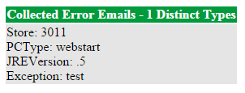
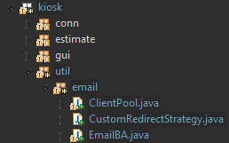
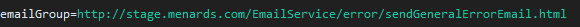
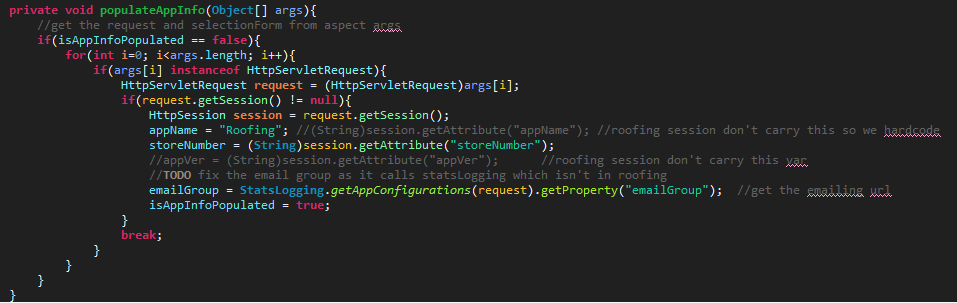
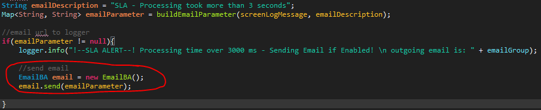

Our apps can send email to us when an error or SLA issue has occurred.
Use DesignitTools package. Pull that in and use the HttpRequests to send email. Do note that designit tools logger may override your app's current logger, so you may not see logs where you use to see them. There are no username and pass required for credential. The only credential is that you hit the correct url and that the parameters are filled in at minimum.
prod: http:// www.menards.com/EmailService/error/sendGeneralErrorEmail.html
dev: http://stageapp1-external-designit.menards.net:8080/EmailService/error/sendGeneralErrorEmail.html
stage: http://stageapp2-external-designit.menards.net:8080/EmailService/error/sendGeneralErrorEmail.html
both dev and stage sends to the same email. to see the dev/stage email visit http://omdc-devimail/webmail
user:collector, pass:menards1
prod emails goes to the designit email
parameters are:
*note that the : in the following separates the key from the value in the parameter hashmap. These are all Strings.
storeNumber : youHaveToUseAStoreNumberHere
jreVersion : testJRE
arch : testx86
os : testOS
appName : Siding
Visit this link and see if you get the image below
Use mPutty to see if you can connect to the external prod.
Select the mcom prod preset > Login with active directory > type wget http://www.menards.com
You should get some stuff within 2-5 seconds, if it takes too long, then that means you cant connect and there is a firewall issue with the server the that the app resides in
EmailBA is all you care about touch
Currently we keep email url inside the appconfig.properties. When developing For roofing, you want to create at C:/ these directories opt/kiosk/Properties/RoofingEstimator/ directories and put roofing stage appConfig.properties in there. If you are running locally roofing on your pc, this is the appconfig roofing will use
We then use aop arg to get the request at runtime. Then call StatsLogging class to get the emailGroup property from request.
This is a more robust way to get the email url for the correct environment instead of hardcoding it
Once you get the parameter built (hashmap), just create and pass it to the emailBA. Check out TimerAspect.java for better example.
